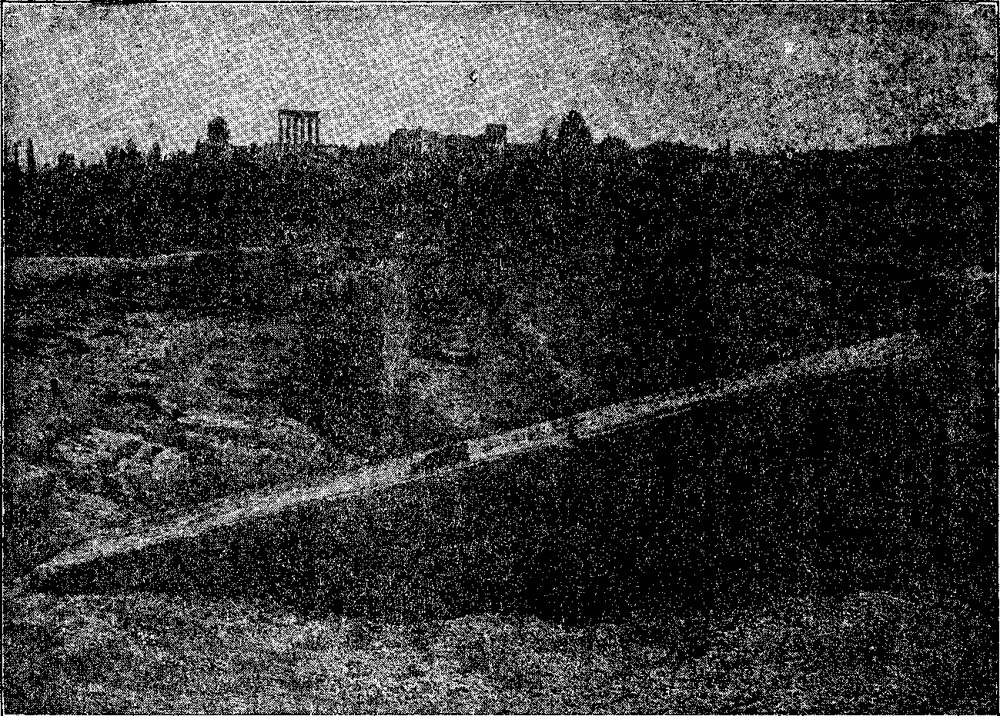
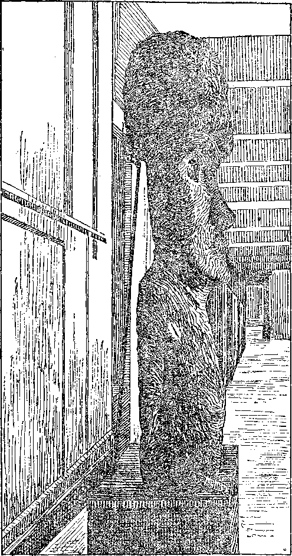
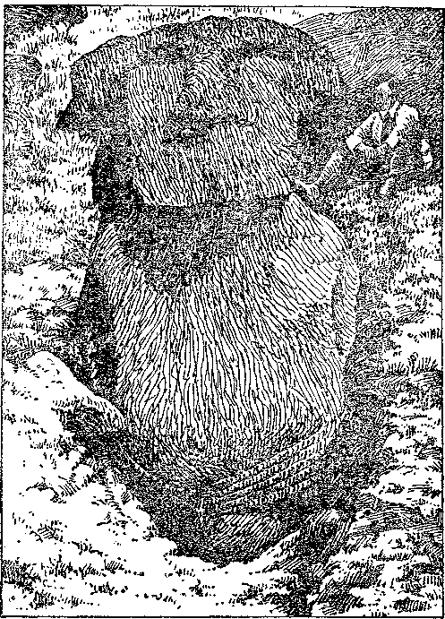
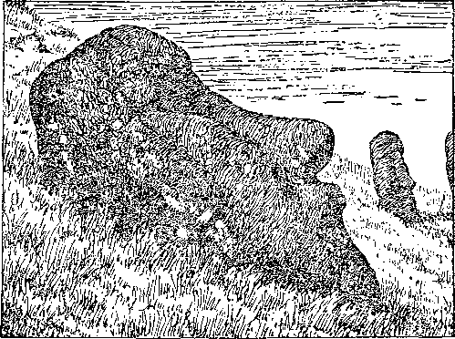

<9
Social and Educational , Westebn Canada as I Know it
■ The Farmer’s Uphill Job ......
‘ Prairie Social Life ................. 554
COKROBOBATIVB EVIDENCES 01' ANTEDILUVIAN G1ANTS
Nephilim Quarry, near Damascus (Illustration)
The Ancient Invasion of Peru .
Stone Images of Easter Island (Illustrations) ........ 565
Finance—Commerce—Transportation
Standard Labor Houb As a Unit of Value
Early Markets in Canada . . . . ...... . . . 553
Soil and Vegetation in Northwest ............ 555
The War Boom and its Aftermath ............. 557
Political—Domestic and Foreign
Zionism Will Never be Reversed ...
Hudson Bay Company an Empire .
Science and Invention
The Possibility ot Eternal Life on Earth
Jerusalem will Broadcast June 1st .......
Hebrew University a Historic Spot .......
The Philosophy of the Mass .............. 567
What the Reign of Christ Means ............. 570
The Highway of Holiness ............... 573
Studies in “The Harp of God" .........
Published every other Wednesday at 18 Concord Street, Brooklyn. N. Y„ U. S. A., by WOODWORTH, HUDGINGS & MARTIN
Copartners and Proprietors Address: 18 Concord Street, Brooklyn, N. V., V. S. A. CLAYTON J. WOODWORTH . . . Editor ROBERT J. MARTIN . Business Manager WM. F. HUDGINGS . . Sec’y and Treas.
Five Cents a Copy—?1.00 A Year Make Remittances to TUB GOLDEN AGE Foreign Offices : British . , 34 Craven Terrace, Lancaster Gate, London W. 2
Canadian . ... . : . . . 88-40 Irwin Avenue, Toronto, Ontario Australasian ....... 495 Collins Street, Melbourne, Australia South African ...... 6 Lelie Street, Cape Town, South Africa
Entered as second-class matter at Brooklyn, N. Y., under tha Aet of March 3, 1879
Volume VI Brooklyn, N.Y., Wednesday, June 3, 1925 Number 149
Texas Wolf Hunting
WOLF hunting in Texas is great sport. One of the largest and most interesting fields is in the northwestern part of the state, near Shannon in what is known as the Hillhouse district. There the wolf hunters live in three sections about five miles apart, and each has a pack of from five to a dozen wolfhounds of the Walker breed, developed at Ann Arbor, Michigan. These hounds are noted for their swiftness and remarkable endurance, though less keen of sense than the ordinary foxhound, and smaller in size, and white and black spotted.
The foxhound and the deerhound are less suitable for wolf chase because too slow of speed to tire the wolf. It would be an all-night drive and no capture. Wolves are hunted only at night and during moonlight, when the hunters can see them cross the roadways along the runways, and encourage the pack to attack. At a shout from a hunter the whole pack of dogs, of from half a dozen to a dozen or more, simultaneously charge the wolf and bring him down and to his finish.
There is the common prairie wolf that plays . the dogs for hours within a radius of some five or six miles square, and seems to enjoy the sport. The dogs are trailing at his heels, and thrilling the hunters and the ranchers with their hayings. This is sweet music to every hunter. This wolf is comparatively small, not much larger than the sneaking and detestable coyote, and is not dangerous, but a prowler nevertheless, and a marauder on small farm animals and poultry. He has swiftness and endurance.
Then there is the larger and more savage and dangerous lobo wolf, which when driven by a pack of dogs in the daytime, takes a straight line out of the country for a hundred miles or more. The result is a loss of the dogs in all probability, since they cannot find their
By J. A. Bohnet
vTay home or are stolen. Often it is necessary to phone all over the country to recover the dogs.
It is for this reason these wolves are hunted only at night, when they play about the homeland sections for hours with the pack trailing along behind. These wolves are clever; for often when a wolf has led the pack a long while, a fresh wolf crosses the trail in full sight of the dogs and turns them away from the tiring wolf.
But in the event that a tiring wolf is on what is called his death-run and is panting hard from exertion, no dog will leave his trail, but goes on and drives him to a stand under somebody’s house or barn or into a pond of water or other refuge of shelter. There he can face the dogs, and snap at them when unable to attack him to advantage or from his rear.
Sometimes a dog gets so far behind the pack in chase that a lone wolf comes in from the side and cuts him off from the pack. This cut-off dog sets up a mournful howl which immediately brings back the whole pack to his rescue, and gives the jaded wolf a rest.
Sometimes the pack will take after the interfering wolf if the first wolf was not on the “death run”. A cut-off dog is sometimes attacked by the interfering wolf, and does not last long.
The lobo wolf fears not one or two dogs. Even a coyote will turn on a single dog. But a mere poodle can chase it out of sight of a man or of a house; then back comes poodle.
Wolves roaming about will never pause in a valley or lowland between hills. They go on to the top of the next ridge or hill, whence they can view the back trail and the surrounding country. One cannot sneak up oip the animal with a gun; for he lies in wait upon an eminence of some kind.
On a moonlight night some wolf-man releases his pack of dogs at one end of the wolf
- 547
ne QOLDEN AQE
M8
range. Immediately they start a wolf down the range. The wolf-man phones to the next wolfhunter, some miles away, simply saying, “They are coming!” .
This man understands that the dogs are in pursuit of a wolf headed in his direction, and that he is to wait- until the chase is opposite his place before he releases from his corral his pack of fresh dogs to hustle the wolf. His dogs are crazy with desire for release; for they have heard the oncoming pack’s merry noise, and they jump about the wire enclosure anxious for the fray. x
The owner throws ©pen the corral gate; and away goes the second pack to join the first. After listening awhile to the din of dog chorus, he hastens to the phone and advises No. 3 wmlf-man to turn loose his pack. Then he gets on his horse to be at the rtmway on return of the wolf, and shout the pack to a united and simultaneous attack. -
The wolf is hustled by the fresh dogs. The first pack being somewhat wearied, drop behind but keep up their cry and continue the chase. It is then that a fresh wolf crosses the line and switches off some or all of the dogs.
People throughout the country round about stand in front of their homes and listen to the baying of the hounds, of which there may be twenty or more. The wolf seeks refuge. lie has stopped repeatedly to snarl at the little dogs and to show his teeth. Now he is weary and must find a shelter.
Before the pack came up to him, he sought to throw them off the trail by going into what is called a “scald”, a place of dry, hard shale rock on which he leaves no. scent. These places are often many acres in extent. The dogs are checked and puzzled to pick up the trail. The wolf has gained perhaps a mile or more, and incidentally a period of rest.
But soon the pack‘is in full swing again, hot on his track. They see him now and again; they draw closer and closer. Presently the foremost dog nips at him and darts away. A second dog nips him in the flank, and he puts on an extra? spurt of speed to get away from his tormenters.
He dare not stop to engage one in a fight lest the whole pack jump upon him all at once. He seeks shelter, and holds off the dogs until some person appears on the scene and with a yell of encouragement to the dogs brings about the fatal charge. Then the wolf is brought down and bitten to death.
Several of the dogs, are often lacerated by the wolf’s sharp teeth. One dog I know of, whom they call Logan, has been ip at hundreds of deaths and is frightfully battle-scarred. He runs the trail without uttering a cry until in sight of the beast, when he opens up and everyone knows that the pack is,, as the hunters say, “right at ’im.”
It is then the music is supreme, every dog doing his best to out-yelp the others. ‘This is real music to the wolf-hunter; he enjoys it above everything else, even his beloved tobacco. A Avolf-hunter can out-talk and out-spit any three ordinary men.
An experienced wolf-man will thrust his hand into a wolf’s den, and drag the animal out by its hind legs; or he will fasten a rope or cord as a slip-knot over its head and around its neck with the aid of a forked stick, and then drag it out for the dogs to tackle.
It is reported that at Archer City, Texas, there is a man who keeps a greyhound and a bull-dog. Early one morning he drove his car and his dogs into the country, and at sight of a -wolf he turned the dogs loose. The greyhound speedily overtook the Avolf, and held it at bay until the bull-dog came up and fastened itself on the wmlf’s neck. Then the wolf was bitten to death by the greyhound. The city boys v-ere informed and went out and skinned the wolf, and were about $10.00 ahead on the sale of the pelt and the bounty. The boys love that man.
Wolves frequently come into town early in the morning, and catch the chickens as they fly off their tree roosts; for down there no hen houses are provided. The chickens all roost in the trees, and are easy prey to the ventur-sorae wolves at daydawn, while the people are still asleep, as the wolves seem to know7.
The writer enjoyed one of these thrilling hunts, but missed the thrill of being in at the death. The morning following, the wolf was killed by the dogs in the very yard of the house m which the writer was to sleep that night. There is no night sound so thrilling as that made by a dozen dogs in a wolf chase. One of the wolf-men kept twenty dogs. Wolf chasing was his hobby and his living.
A mistaken idea is prevalent that prairie wolves in number will attack human beings at night. Not so. Even timber wolves as a rule need not be feared in this respect, except when driven to it by extreme hunger. Russian wolves are an exception, and possibly the northern Canada wolves. It is also generally supposed that when chased by wolves at night and one (or more) of the pursuing animals is shot, it will check the remaining band which halts to devour the slain one. Ask the Indian about this and he will tell you: "Injun no cat Injun. Wolf no eat wolf!” And the redman knows, if anyone does. It is doubtful if even the puma (panther), called cougar, will attack any human being larger than a small, lone child.
But do not get in the way of a grizzly bear. The grizzly fears nothing but the panther, which hops on and off its back and claws deep into its shaggy coat of hair to the skin beneath at every such leap, and which is agile enough to keep away from the powerful forepaw of the big bear.
IT IS well known that reasoning from false premises leads to wrong conclusions. This sort of reasoning is just the trouble with most bf the writers on this New Monetary System which they attempt to elucidate.
Wc must examine this New Monetary System from the standpoint of the new earth and not from the standpoint of the world’s present system—dollars and cents, pounds and pence, francs, marks, rubles, etc. This system must pass away in toto before a new and righteous system can be set up.
No tinkering witli a corrupt and unrighteous system can make a right one. If we should put new wine into old bottles, the bottles would burst, and the new wine be lost. Therefore no part of the old system can be used. “Behold, I make all things new.”—Revelation 21:5.
It would seem that the time for making some of the new things would be shortly after the destruction of the old, and that right early in the morning; for the destruction will be worthy of calling attention to Psalm 46. “Every plant, which my Father hath not planted, shall be rooted up.”—Matthew 15:13.
We are also told that the love of money is the root of all evil. And who is there who does not love money, with the necessary things of life that it enables us to enjoy?
I dare venture the assertion that when this world’s system of money and finance is rooted , up, there will be found on every root of the plant the teeth and the claws that have brought distress upon the present order of society ; and that the rooting up of the plant will constitute the actual binding of Satan. (Revelation 20:2)
It will actually deprive him of his power to deceive.
But what can be instituted as a medium by which the products of man’s labor may be exchanged throughout the earth? For the government to be a world-wide government and a righteous government, the system must be right. Let us consider:
(1) We have a man at maturity possessing physical and mental energy, skill and dependability, all to a normal degree. He may be a carpenter, a blacksmith, a railroad manager, a public instructor. Wherever his lot of labor falls, he is of that class of workers who possesses normal capacity; and this entitles him to a classification as a Class A, or standard workingman, sixty minutes of whose labor would constitute a standard labor hour.
(2) Workmen falling short of the standard, or A Class, in energy or skill or dependability, $ would naturally fall into Classes B, C, 1), etc., according as the percentage (say ninety percent, eighty percent, seventy percent, etc.) of labor which they perforin in sixty minutes, bears to the standard labor hour, of which Class A is the standard.
(3) All service less than standard must be reduced to standard labor hours, or fraction thereof, by percentage.
To illustrate: John works 48 standard hours in a week and his product is marked 48 S. L. II.; or in other words 48 standard hours is the selling price of John’s product of 48 standard hours. Do not attempt to reduce hours to dollars. It cannot be done. James works the same number of time hours as John; but James is a Class. B worker, whose sixty minutes hour of time is rated but ninety percent of standard. Therefore James’ would be 43.2 standard hours, instead of 48.
Now having the. standard or unit by which all service can be valued, and having the product of that service marked Avith its standard labor hour cost, we are ready to exchange one product for another of like standard labor hour cost in any part of the world. But how can we manage to do this conveniently ? May wc here borrow the form, but not the. evil power, or the substance of our United States dollar?
Instead of dollars we print standard labor hours on our demand note—1-2-5-10-20-50-100-500 standard labor hours, as the case might be; and thus we have a standard labor hour currency in convenient denominations with which 'to pay for service and facilitate exchanges of commodities, eliminating all profit, and making the standard labor hour the unit of value, instead of the money units now in use..
By Dr. Paul E. Kold, President of The National Academy of Naturopathy, New Yorh:
IN THE opening chapters of the Divine Revelation we are’told that in the beginning God created man perfect, in His own image, perfect mentally, morally and physically, placed him in a perfect environment, and provided for him perfect life-giving food. Under these favorable conditions man was put on trial, to determine his fitness to receive the benefits of eternal life. The record is that he failed. The sentence, “dying thou shalt die,” was enforced; and the consequences of that penalty passed down to his posterity, so that there is “none perfect, no not one.” The law of heredity reigns supreme.
The Curse—Its Practical Enforcement.
OTTI the Scriptures and science agree that “as a man thinketh in his heart so is he”;
and here we find the beginning of that degeneration that caused the fall of man. As long as Adam and Eve, his mate, were in harmonious mental and spiritual relation with their Creator, as long as the mental law of love, and its fruits, faith, hope, peace, patience, joy, etc., reigned supreme, their equilibrium was maintained; and life in fullest measure was expressed.
The downfall of Adam and Eve was caused by the undermining and overthrow of their mental stability, by subtle suggestions of the adversary, “Thou shalt not surely die,” etc., which displaced their faith with doubt, and thereby opened the way for the overthrow of hope, patience, peace, joy, and love and the bringing in of qualities of despair, impatience, worry. sorrow, and hate, finally culminating in the disobedient act, the eating of the forbidden fruit. Mental thoughts always precede physical acts;’ and thus the degeneration of the race started with wrong thoughts which, expressed in physical violation of natural law, produced destructive consequences.
The Expulsion from Eden
rpiIE next step that brought on the enforce-ment of the penalty of death was the expulsion from Eden, the withholding of the perfect food, and the removal to uncongenial environment. “And the Lord God said, Behold, •the man is become as one of us, to know good and evil: and now, lest he put forth his hand, and take also of the tree of life, and eat, and live forever; therefore the Lord God sent him forth from the garden of Eden.”—Genesis 3: 22, 23.
Driven out info the crude, unprepared barren parts of the earth, and in this uncongenial environment forced to subsist on food that was poisonous, chemically unbalanced and hence unfit to supply their physical requirements, they began slowly to die. Yet their perfect organisms were such that they survived almost a thousand years. But since the Flood and the coming of the Glacial Age, the race has had other factors to contend with. The great icecaps in the polar regions, which.geologists tell us extended far into the temperate zones, produced a serni-dormant condition, inhibiting.the normal life processes. . The releasing of ahno.iv mal amounts of nitrogen into the atmosphere,
as a result of the disintegration of the millions of human and animal bodies, thereby diluted the oxygen content, and cut short man’s life span from almost a thousand to less than forty years. Thus we see the consequences of the fall, the practical enforcement of its penalty, and the obstructions to the attainment of eternal physical life on earth. .
S MAN’S downfall began with the overthrow of his mental equilibrium, the first step necessary for. his restoration is that he should know the truth. As Jesus said: “The truth shall make you free”—free from the defiling influences of selfishness, hate, doubt, despair, worry, impatience and anger. Even science now demonstrates that these have a direct destructive influence on the tissues of the body. Man must come back into atonement Avith his Creator through the Mediator provided by love divine, and thereby gain that “peace of God that passeth all understanding”, love supreme reigning in his heart and mind, prompting to cheerful, willing obedience to the laws of God. Thus we shall reach the ideal conditions for perfect mental, moral and physical restoration.
Biology teaches us that all living organisms are made up of an infinite number of livingunits called cells. These cells are the focal points for all the vital phenomena of the body. In these centers the creative force of the mind controls and causes the transmutation of matter from its crude state into the highly organized living protoplasm. The mind brings about this creative act through the medium of the mineral salts, and the utilization of the carbon, hydrogen, oxygen and nitrogen.
Thus Ave find that there are three primary life functions performed in the cells; the functions of nutrition, elimination, and innervation. As long as these three biological functions are normal, perfect ecpiilibrium or health prevails; but any interference with them produces disease or disharmony.
Conducting researches into the causes of natural phenomena, natural science now tells us that all matter is composed of fundamental units called electrons, which are but vibrations or electrical charges in the primary substance, ether; that these charges or electrons, are of different polarity, positive and negative. The electron is the negative unit, and the proton the positive unit. These, being drawn together by the operation of the law of attraction, form the chemical unit known as the atom. Science now states that the number of electrons in the atom determines the substance, or element.
The science of naturology and the art of naturopathy are giving to the world the truth as it relates to our physical life. Basing its deductions upon the foregoing facts of revelation, natural science and biological phenomena, this science inculcates obedience to natural law, stating as its fundamental proposition that disease (disharmony) is caused by the violation of the laws of nature. These violations bring about the inevitable consequences, chief of which is interference Avith normal nutrition.
During the last ten years more progress has been made in the scientific (truthful) understanding of diet than at any time since the Flood, and we are now in possession of facts that would revolutionize the world if generally applied.
Science has further discovered means to rid the earth of its cloak of nitrogen by restoring it to the soil, thereby enabling the production of unlimited quantities of food. Further,, in the resurrection of the billions of humanity, the nitrogen will be utilized, and thus the atmosphere will be fully cleansed.
The Glacial Age is fast drawing to a close. Arctic and Antarctic explorers tell us that great ice floes are breaking up and drifting towards the equator; and that places are now accessible that were formerly ice-bound. Scientists have even suggested the possibility of disrupting the remaining ice-caps, and thereby bringing about their rapid disintegration.
Thus Ave see the forces in action Avhich shall bring about that glorious consummation foretold by all the prophets since the Avorld began :
“Repent ye therefore, and be converted, that your sins may be blotted out, when the times refreshing shall come from the presence of the Lord; and he shall send Jesus Christ which before Avas preached unto you: Avhom the heaven must receive until the times of restitution of all things, Avhich God has spoken by the mouth of all his holy prophets since the Avorld began.”—Acts 3:19-21. '
IN THE western part of Canada there is an immense area of prairie land, approximately 760,000 square miles in extent. Most of this, especially in the provinces of Alberta and Saskatchewan, has in recent years been opened to settlement by homesteaders.
About fifteen to twenty-five years ago the United States, Eastern Canada, England, and other countries to some extent, were flooded with circulars and literature describing the wonderful opportunities awaiting settlers in Western Canada. The circulars had highly colored pictures showing fields of grain growing or standing in shocks, with herds of fine cattle and horses, well-improved farms, with gardens, good buildings, etc., set in a beautiful landscape, all seemingly intended to convey the thought that the original garden of Eden Avas located somewhere beyond latitude 49° and longitude 100° west from Greenwich.
People with things to dispose of, from the nomadic horse-trader to the real-estate dealer, or stock broker, or the "con” man with his wheel of fortune or peas under a shell at the County Fair, are usually fluent in describing the merits of their proposition. .
And while it was not a bad thing for the Canadian Government to offer free land to settlers or for the railroad companies to invite people to settle near their lines, yet the truth was only partly told; and many went there little understanding the difficulties which they were to face or the hardships to be endured before a permanent home could be established in that country.
Types of Immigrants
THE country was surveyed out in various sections and on set dates opened for filing. A land office was established in each district; and those wishing to take up land went there to file on their quarter sections.
The land office might be located at a place possibly 100 miles from a railroad. The town consisting of perhaps twenty-five people, a hotel, a restaurant, a lumber yard, post office, livery barn, a general store, with hundreds of miles of prairie stretching all around.
Some of the people coming to file on the land would arrive as many as six days before the date of opening. Those first in line received first choice of land; and so they would wait all that time in line, day and night, in order to be among the first to select their homesteads. It was necessary to have some one to bring food to them and to change places with them in order to hold their places in the line.
The people who came were a varied lot, from every walk in life and from every nationality. Some were doctors who had failed to make good; others were lawyers who had not finished their course of training because finances had run short, or something of that sort; while some had had a love affair which had turned out badly and who had come west to forget it.
There were also men with families who had been farming in some other section, or laboring men from the towns who wanted to get back on the land again. There were still others who came from England, and who had been somewhat reckless and a disgrace to their families. In order to get rid of them their relatives had supplied them with money to come to Canada. .
Then there was another type of man—the one with a blanket strapped on his back and all his luggage tied up in a red handkerchief. He had only one outfit of clothes, and did not expect to discard it until it was worn out. He took a bath only when he was caught in a rain storm or when he accidentally fell into the river. But he Avas the man who usually proved up on liis homestead. He had nothing to care for; his living expenses were almost nothing; and he Avas as free to come and go as the prairie Avind or the birds flitting across the blue sky above him.
Canada, like other countries, is ruled by a financial group in connection vrith self-seeking politicians and the usual complement of clergy to say amen to their doings. In order for the alluring dividends of banks, railroads and manufacturing companies to continue, there must be a large class of Avorking people to produce things and to sen’e as customers. It was tne need of sheep from Avhich to clip the golden fleeces, and not a purely benevolent desire to give homes to the poor, which prompted the spending of hundreds of thousands of dollars for immigration propaganda and actiAuties.
Land Office Scenes
THE people coming to the land office used various modes of travel. Some came in wagons driving horses or oxen, some walked, and others used a raft of logs to float down a river or paddle their way in a canoe.
All who came got land; and there was plenty left over; the more desirable parts, of course, being taken first. The regulations regarding homesteading required each settler to clear and break thirty acres, build a house costing a minimum of $300.00, and live on the place six months of each year for three years. - If this was done satisfactorily, the homesteader received a deed for the 160 acres; and it was his own. ,
It wTas also necessary to make a payment of $10.00 at the time the land was filed on. Some facetiously remarked that the Government was betting 160 acres of land against $10.00 that the homesteader would not be able to stay three years. And it was true as often as not that the Government won the bet.
In about fifty or sixty percent of the cases, the first homesteaders left before the three years were up. Sometimes it was on account of loneliness on the wife’s part, sometimes because there were no schools for the children; but more often the homesteader left to avoid starvation, because his money had run out and he was not able to sell enough to buy the necessaries of life.- Many others had to leave- on account of inexperience, never having lived on a farm before; and, not being familiar with the work, they were unable to stand the rough life and the crude manner of living.
But the man with the blanket strapped on his back was not bothered vTith any of these difficulties. He would hire some of his neighbors to do the.breaking and build the house; and he would go back to work at a railroad grading camp or similar work, perhaps hundreds of miles awra.y, work there during the summer and live on the place during the winter.
He did not desire the land to make his home on it, but to get as much out of it as possible; and as soon as he got the deed, he would sell the land or mortgage it for as much as possible and let the mortgage holder have it. Then he would go to the nearest town, and enjoy himself as long as his money lasted.
The Early Markets
UT regardless of difficulties, the land finally became settled. Some came and others went, much of the land falling into the hands of mortgage companies, while some was not taken up at all. While people were coming in from other parts and bringing money with them, conditions were prosperous; but when money ceased to come in from the outside and it was necessary to live from the produce sold, things began to go wrong.
Crops were uncertain on account of drouth, or from frost coming before grain reached maturity, or from hail or other causes. Wheat frozen before it was mature wrts good only for pig or chicken feed, and was hardly salable; but it cost the farmer as much to raise as good wheat. Those who were still on their land lived in hope from year to year that the next year would bring a good crop. But when a good crop did come, they found that the price was so small that often it did not pay the cost of raising.
The grain had to be hauled from ten to sixty miles across the prairies and then the price received was only from forty-five to seventy-five cents a bushel. At the grain centers the price might be $1.00 or nearly so (the average price at Winnipeg for the period from 1900 to 1914 was a little less than $1.00 per bushel); but there were hundreds of miles of railway in between, and other charges for handling.
In addition, there were usually only one or two elevators in a town and the owners set the price to suit themselves, and of course it was not in the farmers’ favor. They were not out there merely to breathe the fresh air and enjoy the scenery or to do good to their neighbors; they were there to make as much money as possible. There was no danger of their hurting their consciences; for if they had any at all it wras so atrophied or withered away that it <iad practically ceased to function, or else was educated to operate only along lines that did not interfere with its owner gaining possession of a dollar that happened to come his way.
The Farmer’s Uphill Job
OMETIMES a farmer would come to town with a load of good wheat; and the elevator man would look at it and say: “That is No. 3 grade and is worth only forty-six cents today.” Then if the farmer refused to take that grading and price, and decided to go somewhere else, the buyer would telephone ahead; and when the farmer arrived, he would be offered the same or a little less. Then there was nothing for him to do except to take the money or to haul the grain back home to rot.
It -would hardly be fair, however, to give the Canadians credit for all the shrewdness along these Unes. Many communities in the U. S. have experiences along" similar lines, and sometimes on a larger scale. The “business man” usually has means of luring the elusive coin from the pockets of those -with whom he has dealings. When the farmer had a carload of grain, he could ship it to Winnipeg or some other point; and trusting himself to the tender mercies of the commission merchant, sometimes he could do a little better than at the local market.
Hogs and cattle were also cheap, the price received often being less than the cost of raising. Eggs usually sold at about twelve and one-half cents a dozen in summer and the money had to be taken up in trade at the store. Butter was often not salable at any price, and was frequently used for axle grease.
The farmer usually had machinery and other things bought on credit; and the interest was eight percent; taxes were also high; threshing cost quite a lot of money; and when the returns of the year were counted, it often found the farmer with a deficit of several hundred dollars. Then it was necessary to mortgage the farm and to hope that next year he would do better. If he was fortunate he might later pay off the mortgage and keep his home; otherwise he would lose it, and have to start again somewhere else.
Western Canada had been described in the immigration literature as a land flowing with milk and honey, but some of the homesteaders thought they found snowballs and boulders more plentiful.
HE farmer's wife usually had a hard lot also. The houses were mere shacks of one or two rooms without accommodations of any kind. The water supply, if they were not fortunate enough to have a well, was usually obtained from a nearby slough or creek in summer, and from melted snow in winter. The men were too busy with the grain and other stock to look after the pigs and chickens; and these together with the garden, milking, and butter-making, looking after the children, cooking, washing, and other household duties were considered part of the wife’s domain.
There was a cook stove that burned wood, and had to be lighted three times a day to cook the meals; and it was not at all seldom that the wife cut the wood with which she made the fire. In winter, each morning found everything with moisture in it frozen solid. Water pails, cooking utensils—anything that had wTater in it—• had to be thawed out.
A woman accustomed to modern conveniences, hot and cold water in the house, steam heat, gas range, fireless cooker, electric washing machine and telephone, groceries and mail and other things delivered at the door, and plenty of time in the afternoon or evening to go shopping or to the movies, would perhaps find life a little unpleasant on a pioneer homestead in Western Canada.
Added to the foregoing is the loneliness of the vast prairies. Perhaps the nearest neighbors would be two or three miles away; and perhaps two or three miles farther on there would be another little shanty where someone lived. While the farmer was gone to market with grain or other produce, it was often necessary for his wife to stay alone and look after the stock, etc. The trips often took two or three days each way—four to six days for the round trip.
The Northern Lights shining brilliantly, flaring up and then dying away, give a weird aspect to the snow-covered country; and the dismal howls and plaintive wails of the coyotes in the coulees, or wooded ravines, add to the lonely feeling experienced.
OCTORS and nurses were scarce, often being twenty or thirty miles or more away;
and in cases of sickness there was much suffering on account of lack of attention, which might otherwise have been avoided. Especially was tliis so in maternity cases; sometimes the doctor arrived after the child was born.
It was no unusual thing to see a woman in the field helping her husband to dig out stones,
n. QOLDEN AGE
Jtnb 3, 1925
or helping to dig a well or, at plowing and seeding time, driving a team attached to some farm machine. When working about the farm it was customary for women to wear overalls.
When times were hard and money scarce, which was most of the time, many were not able to buy sufficient clothing. In winter people often wrapped gunny sacks around their feet in place of overshoes.
At the neighborhood social gatherings there was sometimes a variety of costumes. Some who had brought good clothes with them when they came from other parts appeared quite well dressed; while others not so fortunate or more careless, wore their everyday clothes. Sometimes shaves and haircuts were noticeable on account of their absence.
Many of the homesteaders were bachelors, but in many cases not from choice. The life on the prairie did not appeal to most women, and they could not be blamed for that. But any unmarried women who chanced to stray into that section of the country did not stay single long, unless she wilfully and persistently determined to do so. Some of the people who lived there tried to bring in girls or women to do housework, but could not keep them; for they always married, in a short time, often in less than a month. .
At dances and other gatherings there were usually about six women and two dozen men, or about that proportion.
Sod Huts and Blizzards
THE houses of the first settlers were usually of sod or logs, consisting of one or two rooms. Sometimes they were built of logs and sodded up on the outside. In building with sod it was plowed up in long strips, cut into blocks of the size desired, and laid in the wall in much the same manner that stones or brick are laid. The roof was covered with hay or boards, and sodded over the top. A house built in this manner can be made quite snug and comfortable if properly constructed.
. However, it was often the case that there were cracks about the door or other places that made it unnecessary to install a patent ventilating system. In place of windows, a hole with a door to open or shut, served the purpose.
If one was fortunate, he might have a floor of boards in his hut; otherwise the floor would be the ground on which, the. house was built.
The winters, especially in the central and northern sections, are long and severe,, the winter temperature being normally about 20° to 30° below, although at times it gets much colder. When it is remembered .that the cold spells in the States are only the left-overs from the real thing in Canada, people living farther south can appreciate to some extent what winter cold there is like.
The only excuse which Moosejaw, Medicine Hat, Regina and some other places have, for occasionally breaking into print is to bear the distinction of being the coldest places in North America. Camrose and Red Deer held the title last winter, the temperature being*reported as reaching 59° and 62° below, respectively.
It is no uncommon thing for people to be lost and freeze to death in a storm, the sweeping drifting snow covering the trails and making landmarks indistinguishable. Sometimes persons, even those familiar with the country, go in the opposite direction from that intended or desired, having nothing by which to determine the directions. Sometimes, if one has a team or is riding horseback, it is best to let the animals pick the trail; for their instinct guides them to a place of safety better than does a person’s judgment.
Soil and Vegetation
IN THE southern parts of Canada the country is almost treeless; and in some sections it is necessary to irrigate in order to raise crops. North of the Saskatchewan river the country is wooded and considerably colder. When it is remembered that the provinces of Saskatchewan and Alberta, are 750 miles from south to north it is easy to see that there is considerable difference in the climate. North of these are the Northwest Territories, extending to the Arctic ocean. Ranching is practised to a considerable extent in the southern part. There are many alkaline ponds which dry up in summer. Drinking water is hard to get in this section.
The soil of the prairie section is mostly quite fertile, and under favorable conditions produces good crops; but the extreme cold, together with drouth, hail, etc., as before mentioned, prove serious handicaps. The plains section, geologists tell us, was once the bottom of a great lake or inland sea, and this accounts for its being so level and also for its fertility. Northern Illinois, which is a very fertile farming district, was likewise once the bottom of an ancient lake.
The plains have rocks, gravel, sand, etc., left by the glaciers during the ice age. These also extend down into the Dakotas. In some places the rubbish is left to such an extent as to form high hills. Ofttimes sand for use in building can be dug out of the top of a hill, showing that it was left there by something more than natural erosion.
In fact, all Canada was covered with glaciers during the ice age; and in some places the granite rocks have been worn smooth by the ice in passing over. In other places hollows scoped out by the ice have filled with water and form the lakes which are so numerous in almost all parts of Canada.
The appearance of the prairie section is that of undulating meadows with rounded sloping ridges covered with short grass, with here and there a hill jutting out from the plain; while the rivers and the lakes with their clear water appear like ribbons and dots of silver on the great expanse of green and brown. In the Spring and early Summer flowers begin to spring up over the prairie—harebells, great daisies, sometimes a few tiger-lilies, and also the wild roses—crimson, cream, and white. The advancing Summer produces many species of the sunflower family, until in August the plains are one blaze of yellow and purple.
The Rocky Mountains, noted for their scenery, lend a charm to Alberta. Within a hundred miles of the mountains, there is constantly in view in clear weather, the beautiful line of snowy peaks on the western horizon. This continues for hundreds of miles northwestward. The peaks of these mountains are majestic, many of them reaching more than two miles above sea-level.
Canadian Humming-Birds
MONG the things with which the farmer had to contend was the mosquitoes, affectionately known as Canadian humming-birds. Coming in great swarms, they are a grievous pest to man and beast. Stories are told about New Jersey mosquitoes that were taken to Oklahoma and Texas and used to drill oil wells, replacing expensive machinery. Canada can hardly equal that • but anyway there were quantities of mosquitoes, and they were a great annoyance.
Cattle, horses, and other animals were almost driven to distraction at times, and it was necessary when the pests were at their worst, to build smudges about the barn and cattle lots, to smoke them away. Mosquito nettings were provided for the houses when possible; and it was also necessary at times for people to wear netting around their hats and over their faces for a protection, as well as gloves on their hands.
Mr. Edward West, in his book entitled “Homesteading: Two Prairie Seasons”, expresses his sentiments as follows:
“'A lovely summer evening when the wind has fallen seems the chosen hour for these hateful pests to sally forth in myriads, and their voracious attacks on the belated traveller appear truly diabolic. An immense amount of profanity, bad temper, and even serious accidents with teams, are probably due to this cause.”
The Northern Lights
PIE Northern Lights, or Aurora Borealis, is a phenomenon frequently seen, especially in the northern latitudes. A description in words cannot properly picture it to one who has not seen it.
It appears in various forms—sometimes as an arc, or as a sinous band, or as many rays of light shooting from a common center, and at other times as great luminous curtains hung in the heavens. ■
Edward West, before quoted, describes the Aurora as follows: '
“'Often they took the form of an arch of light with streamers shooting upwai’ds from it, which appeared and disappeared and rapidly varied in intensity. On other occasions the greater part of the northern heavens seemed to be hung with colored draperies, appearing and reappearing in ripples and wavelets of rosy vapor. The light spread over the sky in such a way that the moon and some stars were seen through it.”
Surely the pioneer settler may place the opportunity of viewing such beautiful and apparently harmless manifestations of the great Creator’s power against some of the difficulties and hardships of his life. And in this connection one may point out that, in spite of its strenuous character, the life offers to thoughtful minds many opportunities for the study of the wonderful phenomena of nature and their observation in many fields.
One is reminded of the beautiful lines of William Watson:
“When overarched by gorgeous night
I wave my trivial self away, And all I was in all men’s sight Shares the erasure of the day, Then do I cast my burdening load Then do I gain a sense of God.”
There have been many theories advanced as to the nature and cause of Aurora Borealis, but no one seems to have been able to demonstrate satisfactorily just what it is. The theory which seems most reasonable and which seemingly finds most general acceptance is that it is some sort of energy or electrical current emitted from the earth near the magnetic pole. Some say it is the ionization of the atmosphere by some cause or other emanating from the sun; others say it is a reflection from the sun shining on the polar ice. There are also other theories. The reader may take his choice.
Those who have been in the extreme north say that from that quarter auroral displays are most frequently seen in the south. An observer in Greenland says that often an auroral curtain was seen to approach from the south with considerable velocity and, passing directly overhead, to retire to the north. When the curtain was directly overhead it was observed to narrow to a thin luminous streak, as a vertical sheet of light would show to one passing underneath it.-
Some observers say that they have heard a sound accompanying the phenomenon, similar to the swishing of a whip through the air. It is stated that when an auroral curtain was approaching from the south, the needle of the compass deviated to the west; at the zenith it would vacillate and then, as the curtain passed, deviate to the east.
Prairie Grass and Prairie Fires
THE settlers found plenty of grass for hay and pasture. The upland grass, or prairie wool, as it is called, makes excellent pasturage,-while the longer grass growing along the sloughs or low places is more often cut for hay.
Prairie chickens and rabbits were plentiful; and many settlers provided most of their meat supply from this source. Being easily caught, they saved many a homesteader from the necessity of going hungry. The prairie chickens were especially plentiful in the Fall after the harvest, and could be easily trapped or shot in the wheat fields. There were also varieties of wild berries on the prairies—strawberries, raspberries, saskatoons, blackberries, etc.
Prairie fires were a menace to the homesteader. On a dry, windy day the grass easily catches fire; and once started, it was almost impossible to stop the fire unless the wind changed. Fire-guards wrere usually plowed about buildings and stacks; but these alone were not sufficient, unless a back fire rvas started against the wind.
When a prairie fire was raging, everyone turned out to fight it, using wet sacks to whip out the flames, plowing fire-guards, or using other means at their disposal. It was not an infrequent occurrence for a homesteader’s house and all of his possessions to be destroyed by a prairie fire. In such cases kindhearted neighbors usually assisted the unfortunate ones, and helped them to get started again.
When the Prince of Wales was on his visit to the United States and Canada last Summer, he spent a few weeks on his ranch in southern Alberta. Some of the newspaper despatches spoke of him as being an able farmer. Presumably his ability consists in being able to avoid doing any of the work about the place.
A person who can dance until 4 a. m., and play polo all day, smoking a dozen or so of cigarettes between times, must have some ability, even if it is not the kind that makes things grow out of the ground. There is quite a difference between a person’s being able to |iire all the wTork done on his place, with plenty of money to make up any deficits, and the real dirt farmer who supports himself and his family on what grows and what he gets for it at the market.
The War Boom and its Aftermath
IN 1914 the war broke out; and a few months later came a great increase in the price of grain and all farm products—cattle, hogs, butter, eggs, etc. Wheat went up to $3.00 a bushel; and the farmers of the west became prosperous. They were able to pay off their mortgages and other debts, and to improve their homes and general conditions.
The nations at wax- needed food; and the Government urged the people to go back to the land. They were glad to go, not only because some could thus keep out of the army, but also because it seemed a good chance to make money. Other commodities shared the price advance with farm products; machinery, already high, went up 100 percent, and other goods in proportion.
Many of the farmers bought more land, invested in machinery, horses and other equipment, and prepared to do business on a large scale. The farmers of the United States and Canada were told that they would have to feed the world for several years and that prices would continue high. They relied upon this and were preparing for several years of high prices; but in .1919, the year after the war ended, prices came down with a crash, in some instances lower than they had ever been before. In 1923 wheat was selling for fifty cents and less at the elevator.
The farmer who had invested money in additional land or equipment, or who had bought on credit, found himself in a hole. Interest was due on his debts; taxes were much higher on account of the large. sums spent by the G ov-ernment in the war; and his products were selling for less than it cost to produce them.
Trainloads of cattle were shipped out of the country; and in many instances when the farmer got his returns it amounted to only three dollars a head. Other things were selling in proportion. As a result all business stagnated; and many people found it necessary to leave and go to other places, where they could at least earn enough to live on.
Many of the farmers were unable to pay the interest on their debts; and as a result the mortgage holders had to foreclose. In most instances the mortgage companies would have preferred to have the money; but since the farmers could not pay, the only thing left to do was to take the land. At present seventy percent or more of the farms are held by mortgage companies. Surely this is not a very encouraging outlook for Western Canada.
In the latter part of last year, grain prices increased to some extent, due partly to crop conditions in other parts of the world and, possibly, partly engineered in the United States on account of the election.
IT IS the desire of most people to have a home and to live comfortably, in peace and happiness ; but often, as was the case with many of the Canadian homesteaders, their efforts end in failure. Since being driven from Eden on account of disobedience, man has been permitted to experience failures and disappointments in order to show him his need of God and of His supervising care.
The efforts of men for their own welfare and happiness, apart from God, can never be successful. The remedy which Jehovah has provided, and promised in His Word, is Uis kingdom. He says (Haggai 2:7): “I will shake all nations, and the desire of all nations shall come.”
The "World MTar and events which have followed it have shaken the nations, and they will be still more shaken by the events yet to come. The thousand-year reign of Christ will bring the desire of all nations. The Prophet says that at that time wars shall cease; that men shall sit every one under his vine and under his fig tree; that none shall make them afraid, , for the mouth of the Lord of hosts hath spoken it. (Micah 4: 3, 4) The earth shall yield her increase. (Psalm 67: 6) The desert shall rejoice and blossom as the rose.—Isaiah 35:1.
“Ye shall go out with joy, and be led forth with peace: the mountains and the hills shall break forth before you into singing, and all the trees of the field shall clap their hands. Instead of the thorn shall come up the fir tree, and instead of the brier shall come up the myrtle tree: and it shall be to the Lord for a name, for an everlasting sign that shall not be cut off.” “In his days shall the righteous flourish; and abundance of peace so long as the moon endure th.”—Isaiah 55:12,13; Psalm 72:7.
Near the town of Lloydminster, on the border between Alberta and Saskatchewan, a group of Englishmen settled. They came from England under the leadership of a clergyman by the name of Barr, and were called the Barr Colony. They were not used to farming and, of course, did not make a success of it. Like other immigrants they left England for various reasons, similar to those already mentioned.
It was reported that one who had just arrived, went out to milk a cow; and when he did not return with the milk after a time, one of the other men went to see what had happened.
He found the new-comer trying to milk the cow by using her tail as a pump handle. Another went to the store and got some pails to stand in when chopping trees, so that he would not cut his feet. It is only justice, perhaps, to say that all Englishmen are not like that; some are not quite so ingenious. '
Religious Observances
ONVENTIONAL religious observances do not form a very prominent part of the life of the prairie folk. This may be regarded as a bane or a blessing, according to one’s individual viewpoint. But the fact remains that the majority do not give much attention to religious matters.
It is necessary to have some one to perform marriage ceremonies and to preach at funeral services; and so a preacher somewhere about the community is considered desirable. The Roman Catholic Church has always maintained missions in connection with the Hudson Bay posts; and also the various Protestant sects have made some efforts to send representatives into remote districts.
The Church of England has a missionary arrangement for sending clergymen (usually young men who have just finished their ministerial training) into the western districts for a number of years. They are expected to serve several communities, and are furnished a horse, the feed for it being provided by some of the people whom they serve.
The salary paid by the Church is not sufficient for the support of these young men, the thought evidently being that they are to collect the balance from the people of their district. If the preacher happens to be a poor collector, or if his people are not generously inclined, he sometimes finds it necessary to go to work in the harvest fields or at threshing in order to help out his finances. '
I was staying once at a farmer’s home near the place where the meeting for the community was held. The farmer asked me whether I would go to the schoolhouse where the service was to be held, and start the fire. I gladly did so, although I was not a member of the Church, and had no thought of taking part in the service.
When the time came to partake of the Holy Communion, the preacher motioned for me to come forward. I hesitated, but he insisted,, and so I finally went forward and partook with the others. I did not know wdiat it wTas for, and had no idea what it was intended to represent, (in this probably not very different from the others present); and I must admit that I was never able to note any beneficial effects from it.
The young preacher was evidently more generous than the doctrines which he represented; for I was not a member of the Church, and was therefore destined to eternal torment, and had no right to partake of the Holy Communion, which was intended, only for the saints. .
The social activities of the average prairie community consist of frequent dances at the schoolhouse, occasionally a box social for raising money for some community need, a picnic or two in the Summer, and now and then a friendly visit between neighbors. -•
Loneliness, the great bane of prairie life, affects many. It is not an uncommon occurrence for a homesteader living alone in some remote place, to go insane from loneliness. In such a case the mounted police take him in charge, and the unfortunate one is removed to an asylum.
Peace River and Bunvegan
OME years ago the Peace River country began to be exploited. It was heralded as “The Last Great West.” It had been known as a fertile country for a number of years, but was so remote from railroad transportation that not many cared to settle there. .
In 1898 when the great rush to the Klondike gold fields began, the overland travelers outfitted at the nearest railroad point, and from there made the trip with horses or dog sleds. The route passed through the Peace River district; but the men were looking for gold, not for land; and they did not stop to take up claims, although many noted that it was a level country and that the soil was productive.
A. railroad now runs from Edmonton to Spirit River, a distance of about 400 miles. I have talked with men who have been in the country for forty or fifty years; and they say that previous to 1874 potatoes there grew only to the size of marbles on account of the short summers, but now potatoes grow to large size in favorable seasons. This shows that the climate is gradually becoming warmer. The Chinook winds from the Pacific have a favorable effect on the climate, which averages slightly warmer than the Edmonton district farther south, although it is more changeable.
The town of Dunvegan, in the Peace River country, was widely advertised for the purpose of selling lots. The promoter sent out literature showing the city as it was expected to be •—large buildings, electric cars, a big steel bridge across the river, a railroad, etc. Many people bought lots, thinking that some day they would be holding real estate in the center of a large city. -
It was an "upright deal”; for some of the buyers, when they located their lots, found them standing on end on the side of a mountain. It would have been an ideal-place for cliff-dwellers if there had been any, and if there had been some caves; but since there were neither, and the mountain was too steep to build houses on, no one could find much use for their lots.
If anyone had built a house on his lot, it would have been necessary to drive pegs into the ground and to tie up the baby and the cat and dog and other things about the place to keep them from rolling down into the neighbor’s yard. And if he had chanced to throw any garbage or tin cans into his back yard, they would have kept rolling until they reached the neighbor’s lot at the bottom of the hill. This would have caused much unfriendly feeling in the neighborhood, and maybe a lawsuit and some bad words.
Then the transportation problem was difficult. Perhaps an escalator or a scenic railway might have been built to the top of the slope. But that is indulging in fanciful speculations. It was not a good place to build houses, and no one wanted to live there anyway. The town was never built up; and Dunvegan stands today as it did forty years ago—a Hudson Bay store and a Catholic mission, a stop-over place for cross country travelers. The bridge, the business buildings, and the electric cars the promoter took with him when he left; for they existed only in his imagination, and I presume he carried that with him along with his other luggage.
HERE was also a reported gold discovery in that district about three years ago. I happened to be connected with that personally.
A former Alaska gold-miner, while prospecting on Smoky river, thought that he had found traces of gold. He came to the town of Spirit River, where I was at that time, and formed a party to go down and locate the gold mine.
I happened to have some teams and a sled and camping outfit; so I was invited to join the party and take them down there. We made the journey of forty miles over almost impassible mountain cliffs, in the middle of the Winter, and finally located the spot where gold was supposed to be.
We dug a shaft to bed-rock, but found no gold. However, some of the party took along a bucket of the sand; and on the way back the Alaskan miner took some gold which he had with him and which had been brought from Alaska and mixed it through the sand. Then when they got back to Spirit River they showed the sand, and demonstrated how gold could be washed out of it.
Of course the news spread immediately over the town, and many wanted to get a share in the gold mine. As I did not want to have any part in the scheme, I dropped out of it; and any who asked my opinion I advised not to put any money into it. The promoters of the gold mine were offering to stake out claims for others for one hundred dollars each.
In the meantime another man, not connected with our party, hearing the report of gold discovery, slipped out of town at midnight of the same day we returned, followed our tracks to Smoky river, staked out the claim where we had been prospecting, and then went to the land office and filed on it. There was no gold on it anyway; so it did not make any difference. But it stopped the promoting scheme of the others.
After it was known that there was no gold there, one of the men who had put some money into the project, and who expected to help push the proposition, came to me and was quite angry because I had not told him that there was no gold, and insisted that as I was. a member of the same lodge I should have told him. Yet he had been anxious to get me out of the scheme when he thought there was money in it. Anyway, he had not asked me what I thought of it.
The Alaskan miner and the man who was most prominent in promoting the scheme were both well known in the town, and everyone had confidence in them. It was because of this that the people were willing to put money into the proposition.
The incident shows how the morals of the people in late years, especially since 1914, have become corrupted, and that many are willing to deceive and defraud their best friends in order to make gain for themselves. Formerly neighbors trusted one another, feeling that they could rely upon the integrity of their friends.
Fur Trader’s Paradise
T. CIIIPPEWYAN, on Lake Athabasca, about 59° north, was once the fur trading center of the Northwest. A generation ago, before the country was settled, all that section was considered excellent fur-bearing territory; and in fact the northern part still is. The Mackenzie River basin has been called the fur traders’ paradise. When the lady in New York, Boston, Philadelphia, or London buys a fur coat costing several hundred dollars, quite often the animal pelts from which it is made have come from this section of the country.
The fur traders and trappers were the first to penetrate this country. The Northwest Company of Montreal occupied the northern part of the Alberta district before the Hudson Bay Company took possession of it. The first hold of the Athabasca region was gained by Peter Pond, who on behalf of the Northwest Company of Montreal built Ft. Athabasca, on River La Biche, in 1778.
Roderick Mackenzie, cousin of Sir Alexander Mackenzie, built Ft. Chipewyan on Lake Athabasca in 1788. By way of the North Saskatchewan river Alexander Mackenzie crossed the height of land; and proceeding northward he discovered the river which bears his name, and also the Arctic sea. Afterward going westward through the Peace river, he reached the Pacific, being the first white man to cross the North American continent north of Mexico.
Much of the fur is bought from the Indians, but many white men also engage in fur trapping. The trapper goes into the section where he wishes to work, in a canoe if the weather is warm, or over the frozen ice if it is Winter. He builds a shack of logs, and makes himself as comfortable as possible. Then he sets his line of traps about the distance he can walk over in a day, and makes the round to the traps each day. Sometimes two go together; and in such cases two shacks are built, about fifteen or twenty miles apart. Then they set two lines of traps between the shacks covering different routes. They then make the route daily, staying alternate nights at either shack.
The lakes of the northern region are a favorite summer nesting place for migratory fowls. Myriads of wild ducks, geese and other birds go there each summer. The large expanse of lakes, rivers, and marshes make an ideal feeding ground and nesting place.,
Hudson Bay Company an Empire
IN 1670 Charles II granted a charter to Prince
Rupert and seventeen other noblemen and gentlemen, incorporating them as the “Governor and Company of Adventurers of England trading into Hudson’s Bay”, and securing to them the sole right of trade and commerce in Hudson Bay and all waters and territories tributary to it, with the exception of territory already granted to others, or held by subjects of other nations. The charter also included “the complete lordship and entire legislative, judicial and executive powers”, within the limits named.
The trading stations of the company, which later came to be known as Hudson’s Bay Company, spread over the immense region (excluding Canada proper and Alaska) which is bounded east and west by the Atlantic and Pacific oceans, and north and south by the Arctic ocean and the United States. The Company was an immense financial success from the first, and with the exception of competition from the Northwest Company of Montreal for a time, it has had practical monopoly of the fur trade of the northwest.
Under the terms of the Deed of. Surrender, dated Nov. 19, 1869, the Hudson’s Bay Company surrendered to “The Queen’s Most Gracious Majesty’, all rights of government, and other rights and privileges granted by Charles II, and permitting Rupert’s Land (as the territory was called) to become a part of the Dominion of Canada.
In payment the Company received from the Canadian Government £300 sterling, approximately £1,500, in addition to the privilege of claiming one twentieth of all the land in the Fertile Belt opened for settlement. This amounted to a little less than two square miles in each township. The Company claimed its. land and still holds it, except the portions already sold. It pays to receive grants from a king.
A Bright Future Ahead
THERE have been many books, and newspaper and magazine articles, written about Western Canada. .Especially was this true during the height of the immigration period some years ago. The tenor of these write-ups varies according to the ■ individual viewpoint of the writer and the object he has in mind. Much of it has been written for the purpose of inducing immigration; and in such cases the merits are extolled and the deficiencies minimized, as in all advertising schemes. ■
Canada has always had difficulty with her immigration problem. Many of those who come to her shores, .together with thousands, of her native-born population, emigrate yearly to the United States, so that her territories are not filling up as rapidly as she might desire.
Only about one-fourth of the great Dominion is inhabited, and only one-foriioth of its area is under cultivation.
Canada is a land of varied scenery. Those wishing to view the works of nature as it.comes from her hands, untouched by man, have a good opportunity to do so in Canada.
In the valley of the Mackenzie river and other places of the north the soil is fertile,, and would be very productive except for, the frigid climate. Coal beds are found Shove the arctic circle, showing that at one time in;the earth’s history the arctic regions were' tropical, or nearly so; for coal is formed from the Teniains of tropical vegetation.
The Scriptures indicate that again the 'waste places of the earth shall become productive, and it is probable that under the. reign of Christ, during the Millennium, the ice-bound regions of the north will become useful and productive, the home of man. But then it will not be for the benefit of capitalists or real estate promoters, but will be for the welfare of humanity.
ELATIVE to the interesting article in The Golden Age, No. 109, on “Bible Account of •Antediluvian Giants Confirmed”, it might be further welcome information that I have been assisted in research work in digging up similar corroborative evidences found in various other parts of the globe, such as Mesopotamia, South America, and northern France. The sum of these evidences consists of descriptive material besides photo reproductions of caves, geological strata, inscriptions, etc., in addition to the skeletons of both a giant and his wife (or wives), and in Northern Palestine (Syria), where their very architecture, temples, and even ruins of well-preserved cities, are found, including graves of enormous dimensions.
A mute witness of their former activities, a veritable “Rosetta” key as to its source and -origin (although an unsolved riddle to scientists to this day), is.the gigantic granite block partly buried in the. sand near the ruins of the Sun Temple at Baalbek,, Syria, of which we. read in “Wide World” (England):
“This' huge monolith [photo herewith] is sixty-nine feet long, fourteen feet broad and seventeen feet in depth. It is said to be the largest piece of stone ever quarried, and its estimated weight 1,500 tons! It is thought by archeological scholars that this huge stone was intended by the ancient builders to adorn the Temple of the Sun nearby; now, of course, in ruins. High up in one of the walls, which still stands, are to be seen huge slabs of stone, which careful measurements show to be sixty-three feet long and thirteen feet high. And more remarkable still, they are placed in position nineteen feet above the ground level.
“Moreover, although no sign of any cementing mixture is to be found in these ancient buildings, the stones have been squared and polished so evenly that only after the most minute search can the joints be found• and when traced, it is impossible to thrust the blade of a pocket knife between them! How these things were done is a standing mystery to the scientists.”
According to a recent news despatch: I
“The largest single blocks of cut stone quarried in modern times were columns recently erected in a Harrisburg, Fa., structure. They were thirty-three and one ■ half feet long, five feet in diameter, and weighed forty :. tons each. They were of easily handled Indiana limestone, first trimmed by hand tools, and then shaped
£99
A View or A Nephium Quabby, Nkab Damascus, Sybxa
on special built lathes. They were transported on flat cars, and special rigging apparatus was used in loading and unloading. Every appliance of modem power engineering was at the contractors’ disposal, and yet the feat was regarded as a great one.
Stone Image of Eastee Island
This image is now in the U. S. National Museum, and was brought from Easter Island in 1886. There were more than 600 images on the island weighing from three to thirty tons each. Many of them formerly stood in groups of six to twelve on large platforms made of stone, facing the sea. Easter Island is very small, about five miles wide and ten miles long at greatest extremities, and lies about 27 degrees south of the equator and nearly 40 degrees west of South America, greatly isolated in the Pacific Ocean.
“The ancients, notably the pyramid builders of old Egypt, transported larger blocks of stone greater dis
tances—without machine power. There is in Japan an ancient castle containing blocks of stone of this -weight which must have been brought from a great distance —and yet this castle was erected before the Japanese islands had ever seen such a thing as a wheeled vehicle.’ •
Of the “Cyclopean Wall at Baalbek”, Heusser in his excellent work, “The Land of the Prophets,” page 60, tells us:
.“The lower courses of the outer wall reveal blocks of stone of extraordinary size. Upon the west side are three huge monoliths forming a part' of the wall, ea<h of which is at least sixty feet in length, ten fed thick and thirteen feet high.”
In an article on “The Prehistoric Ruins of Guatemala”, describing the Avenue of Monoliths at Quiringua, Guatemala, Mr. AV. P. Sands (formerly American Minister to Guatemala) tells us: '
“These Great Monoliths, some of which are as many as twenty-six feet high, [were | quarried from the foot-nills, two miles west of the city.”
IN THIS work, Montesino (as quoted by the “National Geographic Magazine”, AVashing-ton, D. 0.) informs us:
“During the reign of one of the Amautas, or kings of those whom we refer to generally as the Megalithic people, racial invasions took place. The invaders came to Peru from the regions south of Tucuman in northwestern Argentine and continued as far as the upper Vilcanota ’Valley. . . . There also came over the Andes at that time large numbers of people seeking new territory, fleeing from a race of giants (possibly the Patagonians or Araucanians) who had expelled them from their lands.”
Of Sir Henry Layard’s excavations carried on in Mesopotamia (Nineveh) the New York Times related the following:
“Typical of the experiences of Layard at this time was an incident in the excavations at Nimrod, which is none other than the ancient city of Calah, mentioned in the Old Testament in the tenth chapter of Genesis. Layard was able under the mounds of dust to trace the walls of this city, 7,000 feet in one direction and 5,000 feet in another. Only wandering tribesmen had for years stepped on the hillocks under which it was buried; and they were, of course, ignorant of what lay beneath.
“The only available labor was native; and in one direction and another, they dug deep trenches, finding here, the . remains of great palaces, for nearly 3,000 years hidden from the view of man; and there, numerous statues and figures from the Temples. For this nation whose ardent language had died out, was an artistic people, as their relics show. Imagine the excitement, even terror of the ignorant tribesmen, who had been for years wandering over these hillocks without suspecting that such treasures of bronze and ivory, carved stone and statues lay beneath them!
An Excavated Statue
This image was excavated on Easter Island, and is an unusual specimen. The form of the fingers is shown at the bottom. The eyes are indicated by more or less straight lines chisled out under the brow, while those images terraced near the sea have the eyes indicated by sockets. The size is indicated by the form of a man in the background.
“The climax of this constant wonder and growing excitement came one day. Two Arabs, urging their horses to their fastest speed, rode up to Layard, ‘Come! Hasten, 0 Bey,’ one of them said. ‘Hasten to the diggers; for they have found the great Nimrod himself. It is wonderful, but true; we have seen it with our eyes.’ Following the men back to the excavations, Layard found behind a screen a majestic head, rearing itself proudly from the earth about it. It evidently belonged to a bull or winged lion. .. .
“One digger ran to a neighboring camp and threw it into paroxysms of excitement by the story that Nimrod had appeared. The chief came to inspect the new arrival. ‘This is not the work of men’s hands,’ he said to his austere tribe who stood about him, ‘but of those unbelieving giants who were higher than the tallest date trees. This is one of the idols which Noah cursed before the flood.’ ”
According to Prof. Alfred Hertig, “Cosmopolitan Magazine,” 1915:
“Recent discoveries in the prehistoric caves of France brought to light their amazing treasures, such as stone implements, bone needles, pottery, and numerous skeletons of giants. Since the beginning of the twentieth century. Les Eyzies, a little hamlet i n France, about fifty miles from Bordeaux, has become, to a great extent, the capital and center of the scientific world. It is in fact, beside the Vezere, about ten miles from Les Eyzies, that thirty-two prehistoric grottos have been brought to light. ... '
“Local curiosity had never driven the inhabitants to penetrate far into these caves, until in the search of kaolin [porcelain clay] they advanced little by little into the interior of the rock. These cavities then proved each to be an entrance to a long, natural tunnel ... a mile or more in length . . . leading into one or more spacious chambers with smooth walls and ceilings. These caverns were at once the dwelling places, the workshops and tombs; . . . and like the inhabitants of Herculaneum and Pompeii, they have left well-nigh indelible imprints of their existence at the moment when a cataclysm abruptly closed their career. . . .
Large Image With Disk Ear
Another image from Easter Island, showing large disk over the ear. There are many of these, the disk varying in shape and size. Some of the images have large stone hats, others pointed whiskers; and all of them are small in brain representation. How the images were carved out remains a mystery. The stone is plentiful, but the transportation to the sea edge would be difficult. It is said that the climatic conditions of Easter Island are the nearest perfect of any place on earth, except for the gales at times. Originally the island was volcanic.
Here have been brought to light skeletons by the hundred, so well preserved that by the -teeth one may judge of their age and sex,”
In certain parts of the country, strata of earth have been left intact, showing the various objects embedded, representing different prehistoric periods; one showing an interruption of habitation, a barren stratum containing no objects.
On one of the pages of the “Cosmopolitan” article is given a reproduction of a most excellent prehistoric drawing of horses, deer, buffalos, etc., found on the wall of one of the caves; and on the same page below, is a photographic reproduction showing the complete skeleton of a huge prehistoric man, also found there. j
Concerning the “Giant Cities of Bashan”, east of the Jordan, Marcins Willson tells us:
“These ponderous structures -[the houses in most of the cities throughout Bashan] are supposed to have been the work of those giant architects, the Rephaim. . . . On the solid foundation of these cyclopean structures ... a story or two of early Jewish masonry and Jewish architecture appear; over these, and among them, there were subsequently first Grecian and then Roman temples for heathen worship; these in times of the Crusades were transformed into churches, and later into Mohammedan Mosques . . . the whole presenting a panorama of human history ranging over a period of nearly 4,000 years.”
One of the graves, measured by Mr. It. Porter in 1865, near Damascus, is thirty feet in length. Another in Anti-Lebanon is about the same size; while still another in Lebanon measures no less than seventy yards—210 feet.
A traveler more recently than Mr. Porter, Mr. Cyril Graham, says of this country of Bashan: _
“We find one after another great stone cities, walled and unwalled, with stone gates, and so crowded together that it becomes almost a matter of wonder how all the people could have lived in so small a place. When we see houses built of such huge and massive stones that no force which can now be brought against them in that country could ever batter them down; when we find rooms in these houses so large and lofty that many of them would be considered fine rooms in a palace in Europe; and lastly, when we find some of these towns bearing the very names which critics in that country bore before the Israelites came out of Egypt, I think we cannot help feeling the strongest conviction that we have before us the cities of the Rephaim of which we read in the Book of Deuteronomy.
“Morever, we have in these mighty men the expla
nation of the origin of the Greek mythology. That mythology was no mere invention of the human brain; but grew out of the traditions and memories and legends of the doings of that mighty race of beings, and was gradually evolved out of the ‘heroes’ of Genesis 6:4; The fact that they were supernatural in their origin formed an easy step in their being regarded as the demigods of the Greeks. Thus the Babylonian creation tablets, the Egyptian book of the dead, the Greek mythology, and heathen cosmogonies, which by some a re set on an equality with the Scriptures, or by others adduced in support of it, are all the Corruption and perversion of primitive truths, distorted in proportion/ as their origin was forgotten, and their memories faded away.” '
Excavations have also been going on in Nevada to unearth the long-lost city of Pueblo Grande, believed to have been the seat of' a primitive people of giant stature. Skeletons measuring over seven feet were found. Large, well-made round earthen buildings have been, excavated; and under .the circular courtyards the graves of the vanished race were disclosed. In many mounds the excavators found shell jewelry, artistically cut beads and decorated pottery of fanciful design, in addition to quantities of crude hunting implements and other primitive tools. These discoveries have been made in the Muddy and Virgin river valleys, near St. Thomas. . .
All of this reminds us of another memorable picture shown in Pastor Russell’s “Photo-Drama of Creation”, entitled, “There Are Giants in These Days.” And I venture to say that just as we now find ourselves interested in archeological verification of these Anakim, Emim, Rephaim, et ah, confirmed by the Scriptural records, so likewise, after the flood of human passions (Revelation 17:15; Luke 21:25; Daniel 12:1) and other natural causes have destroyed modern prototypes of corporation giants and their civilization of vice and selfishness, humanity at large will be given an opportunity during Messiah’s righteous reign, under the Divine Archaeologist and Uis noble staff of experts, aided by the acetylene torch of truth and -the steam plow of God’s Word, to search out, trace, and excavate their modern caves and caverns with their skeleton remains, studying their sources and origin, drawing lasting .lessons of helpful instruction and eternal benefit from them; for “though they dig into hell, [yet] thence shall mine [Jehovah’s] hand take them.”—Amos 9: 2.
APPROACHING a subject of such vast importance, we do so with utmost seriousness of mind and with candor; we approach it disinterestedly, not for any particular side except that which is true and Scriptural.
The Catholic commentators in the Douay Version Bible, commenting on Hebrews 9:25, say:
“Christ shall never more offer himself in sacrifice, in that violent, painful, and bloody manner; nor can there be any occasion for it, since by that one sacrifice upon the cross he hath furnished the full ransom, redemption and remedy for all the sins of the world. But this hindereth not but that he may offer himself daily in the sacred mysteries in an unbloody manner, for the daily application of that one sacrifice of redemption to our souls.”
The very fact that the idea of forming a certain kind of worship called “Mass” had been generated in the minds of some, ambitious men, which worship had reached the point of full materialization, and which in due time was regarded by all as the most sacred and divinely instituted kind of worship for the atoning for the sins, shows that these men had regarded the meritorious offering of Jesus Christ for the sins of the people in sufficient to eradicate the guilt. No one is able to get away with any denials that such a thing was thought of in the institution of the Mass.
The idea that the one great sacrifice of Jesus was not sufficient to atone for the sins of the world, and that there had to be some kind of worship formulated to be offered for the immediate sins of the people, is now clearly seen to be due to the lack of understanding of the infallible Word of God and His plan.
The apostle Paul in Hebrews 9:22 positively states (and a great many other scriptures corroborate the fact) that there can be no remission of sins without the shedding of blood; and the shedding of blood means a forfeiture of one’s life.
Jesus said of Himself that His blood was shed for many for the remission of sins. (Matthew 26: 28) St. Paul states that by “one offering [not millions of them—Hebrews 9: 25] he hath perfected for ever them that are sanctified”, those who are consecrated to God; and that where there is a remission of sins (which remission is an accomplished fact since the
MaSS By Walter Mitera
death of Christ), there is no more offering for sin.—Hebrews 10:10, 14,18,
Since God declares that no one could have provided an offering for sin without the shedding of blood, and that the one offering of Jesus is fully sufficient to make all those who come to God perfect, it proves that no offering, no matter how great and dear, is able to meet God’s approval; that the one great offering of Jesus is all that is needed; and that anything more than that is superfluous, and tends to make the Word of God of none effect.
Further, if the theory of the Mass is true, that it really devolves upon Jesus to offer Himself daily upon wooden altars in “sacred mysteries” in an unbloody manner, it proves conclusively that there is a great deficiency in His one great bloody offering. Such theory is diametrically opposed to all the Scriptures.
Even if the theory of the efficacy of the Mass were formulated and carried out to perform its function in just one such Mass per day for the whole of the Catholic people the world over, the theory would be just as untrue; but at least it would not be so obnoxious and ridiculous as it now stands. That Jesus could be in hundreds of thousands of churches, actually dying in every one of them separately and individually at the same time for every little trifling thing, in order to apply the merit of His one costly sacrifice to those for whom “Mass” is said, is nothing short of absurdity and is ridiculous beyond words to express. Such is repulsive to the basest reasoning!
With a very slight exception, all the masses are paid for far in advance, and there is no way of knowing whether they are being said or not. This particular transaction is being carried out by faith. Some of those having much faith with regard to having their masses said, found out that a particular priest in Europe confessed to hundreds of contracted masses for the repose of many souls for many years (for which he accepted money), which he had never performed. Death-bed confessions and paid-for masses are things quite common in the Catholic churches.
The people who buy masses are contracting with the priest to bring Christ to death for a specified amount of money, without the slightest comprehension of what it means. Jesus says that He is alive forevermore, and that He has the keys of death and hell. (Revelation 1:18) If this is true, and if it is true that each priest offers Christ in actual death, but painless and bloodless, it means that the priest is far superior to Christ; and also that he is superior to God (who offered His Son to die in a bloody manner for the sins of the whole world); and therefore Christ would be a slave in the hands of these priests.
There is nothing mysterious about the death of Jesus. He died to release the human family from eternal death, the righteous sentence upon father Adam, passed upon all the people as the condemnation-sharers in their father's sin. Every Jewish child well knew the necessity of atonement for sin. Then why should there be such a great mystery about applying the merit of Jesus’ sacrifice on behalf of some one? There is no mystery, never was, and never shall be I— Colossians 1:14; Rev. 1:5; Acts 13: 37-41.
The writer has known people who bought masses for their cattle to keep the cholera away, to insure seasonal rains, to save their crops from devastating hail storms and from a great many other plagues. But the cattle died, the hail devastated the fields, and no rain cameras desired. If the dead are helped by the masses as much as the cattle were kept from dying, we all pity the dead and those who try to buy their way into heaven!
Just a few years ago in Europe a scheme of "save your soul from purgatory while you live”, an old-time indulgence, was ushered in and put on the papal market. Any one could avail himself of the "excellent” opportunity. A payment of $150 entitled a person to one mass a day throughout eternity. Thus they would have Jesus die daily for one soul to free it from the purgatorial fires. How much, then, does the mass amount to, anyway? Further, what do Jesus’ words mean, “I am alive forevermore” ?
But since priests are very economical and wish to conserve their time, they merely celebrate one mass for the whole list of subscribers and claim that it has the same intrinsic value. We readily believe it; for there is no value ox* merit whatsoever! Such schemes as that are nothing less than profound nonsense and a blasphemy against the Most High God.
Hebrew University a Historic Spot
IN opening the Hebrew University Lord Balfour called attention to the fact that from the spot where he stood one can see the very place where the children of Israel first entered the promised land. It was also the scene of the agony and betrayal of Christ, and it was also the hill from which the Roman destroyers of Jerusalem conducted their siege.
ON the day of the opening of the Hebrew Uni- T) versify on the Mount of Olives the Jews of
Great Rejoicing Among Jews many American cities published advertisements in the leading newspapers declaring their joy. The mayor of Jersey City made a public proclamation setting the day apart as a day of joy for all Jewish people. The proclamation was published in the newspapers in one-fourth page advertisements.
Zionism Will Never he Reversed
IN HIS speech at Jaffa Lord Balfour reminded his audience that the Balfour policy of creating out of Palestine a homeland for the Jews is not merely his opinion, or even of the great British nation, but is the deliberate conviction of the European and American people, the declared policy of the civilized world, and will never be reversed. We agree.
Jerusalem Will Broadcast June First
EGINNING June first, the new radio station at Jerusalem, officially known as DX, will be on the air every night. Palestine is filling up with some of the most intelligent, progressive people in the world, and they have the money, too, to get what they want. The trolley line between Jerusalem and Joppa is owned by a PhiNdelphia concern. In the new Jewish city of Tel-aviv there are now 138 factories.
The Joy of the People
[Radioeast from Watchtower WBBR on a wave length of 272.6 meters, by Judge Rutherford.
JOY means gladness, satisfaction and delight, because of the blessings of goodness enjoyed at the present time, or the hope for such blessings future to be enjoyed by oneself, and by others who may be obedient to the Lord. It is written: “Jesus . . . the author and finisher of our faith; Aho, for the joy that was set before him, endured the cross, despising the shame, and is set down at the right hand of the throne of God.”—Hebrews 12: 2.
. The joy of Jesus consisted in the possession of sweet fellowship with Jehovah and in the prospect and certainty of bringing all the obedient ones of mankind back into harmony with God. He saw the great havoc which sin had wrought in the world; how the people, alienated from God by Satan, had suffered sickness, sorrow, deprivation, and death. He knew that it was Jehovah's plan, in His due time to bring back into harmony with Him all who -would repent and accept the terms of reconciliation and blessing. He knew that He would have associated wvith Him in this wonderful work the Church, His bride, taken from amongst men and made into His own likeness. He knew that those who would strive to be His faithful followers would have much trouble and suffering, and would often sin because of their imperfection and weaknesses; and that they would turn to Him and cry out for help. He knew that He would be the Advocate of all such; and it would be His joy to lift them out of the depths and comfort their hearts. He had great delight doing the will of His Father. He therefore had joy because of the present blessings He possessed, and joy because of His prospect of blessing the people and seeing them happy and giving glory to His Father.
It is the will of God that all true Christians be joyful. They are not joyful because of their o-wu special attainments; but their joy is in the Lord.
St. Paul was one who rejoiced in the sufferings of Christ, as he stated in Colossians 1: 24: “Who now rejoice in my sufferings for you, and fill up that which is behind of the afflictions of Christ in my flesh for his body's sake, which is the church.” And why did he thus rejoice? He rejoiced in the sufferings of Christ because of the prospect of reigning with Christ. He said: “If we suffer, we shall also reign with him.”
J
(2 Timothy 2:12) He rejoiced in tribulation: “Great is my boldness of speech toward you, great is my glorying of you: I am filled with comfort, I am exceeding joyful in all our tribulation.” (2 Corinthians 7:4) Again in writing to his brethren he said: “We glory in tribulations also: knowing that tribulation worketh patience; and patience, experience; and experience, hope: and hope maketh not ashamed; because the love of God is shed abroad in our hearts by the holy spirit which is given unto us. For when we were yet without strength, in due time Christ died for the ungodly.”—Rom. 5: 3-6.
Paul looked down to a time when the Lord, the King, would be present; and for the encouragement and edification of Christians who should be on earth at that time, he said: “Rejoice in the Lord alway: and again I say, Rejoice. Let your moderation be known unto all men. The Lord is at hand. Be careful for nothing; but in every thing by prayer and supplication, -with thanksgiving, let your requests be made known unto God. And the peace of God which passeth all understanding, shall keep your hearts and minds through Christ Jesus.” —Philippians 4: 4-7.
When Jesus was on earth He said: “Your father Abraham rejoiced to see my day: and he saw it, and was glad.”—John 8: 56.
All the faithful prophets had great hardships, afflictions, sufferings, and reproach; and yet they took it all with joy. And why? Because they were looking for the coming of the great kingdom of God -which would relieve the peoples of earth from all sorrow and distress.
It -will be seen that all the promises concerning the joy of the Lord relate to the time when Messiah’s kingdom will be present and to the blessings it will bring. If all the prophets and the truly faithful Christians have rejoiced in looking’ forward to that great blessing that will be brought to themselves and to their fellow creatures, how much greater will be their joy when all the peoples on earth learn that the Lord’s kingdom is here and when they enjoy the blessings it holds in store for them.
THE faithful Christian now, even though enduring great suffering because of his own imperfections and weaknesses, still rejoices in
the hope that is set before him, and rejoices to tell others about the blessings that the kingdom will bring. And this joy in the Lord is a real strength to the Christian. Just as the Lord had foretold through His prophet, “the joy of the Lord is your strength.”—-Nehemiah 8:10.
Rejoicing in the Lord permits one to forget himself and depend wholly upon the Lord. When he looks to himself, he is weak. When he looks to and depends upon the Lord he is strong, as St. Paul says: ‘In Christ I can accomplish all things.’
HD HE Christians now on earth, who are in the joyof the Lord, are likened unto the “feet of him”, the last members of the great glorified Christ. These are the feet members because they are the last ones of Uis Body on earth; and concerning them the Prophet says: “How beautiful upon the .mountains are the feet of of him that bringeth good tidings, that publish-eth peace; that bringeth good tidings of good, that publisheth salvation; that saith unto Zion, Thy God reigneth! Thy watchmen shall lift up the voice; with the voice together shall they sing; for they shall see eye to eye, when the Lord shall bring again Zion. Break forth into joy, sing together, ye waste places of Jerusalem: for the Lord hath comforted his people, he hath redeemed Jerusalem.”—Isaiah 52: 7-9.
Now it is the blessed privilege of the Christian to be obedient to the command that the Lord has given him, and to announce: “The Lord reigneth,let the earth rejoice; let the multitude of isles be glad thereof.”-—Psalm 97:1.
This, as stated, refers to the time from 1914 until now, and from now forward. In 1914 the “Gentile Times” ended and the Lord took unto Himself His great power to begin His reign, even as it is stated in Revelation 11:17,18: “We give thee thanks, O Lord God Almighty, which art, and wast, and art to come; because thou hast taken to thee thy great power, and hast reigned. And the nations were angry, and thy wrath is come.”
Of course the peoples of earth do not now recognize the presence of the Lord, nor the beginning of His reign at first, because the first work of His reign in the overthrow of the devil’s empire, and is marked by the “time of trouble”. The Christian rejoices, however, because he sees the evidence that the Lord’s reign has now begun; and he knows the blessings that will follow.
God has permitted Christians to be on earth at this particular time, chiefly that they might be a witness for Him and to encourage and comfort the people. To them He said: “Ye are my witnesses . . . that I am God.”—Isaiah 43:12.
It becomes the duty, therefore, of every Christian to comfort the people by telling them what the present trouble of the earth means, and to comfort their hearts by pointing them to the fact that the reign of Christ has begun, that the kingdom of heaven is here.
THE reign of Christ the Messiah means everything to the people. All the Jews have looked forward to the time when their nation would be the chief nation of the earth, and through that nation all the other nations would be blessed. They have based this hope upon the promise that God made to Abraham, which reads: “And the angel of the Lord called unto Abraham out of heaven the second time, and said, By myself have I sworn, saith the Lord; for because thou hast done this thing, and hast not withheld thy son, thine only son; that in blessing I will bless thee, and in multiplying I will multiply thy seed as the stars of the heaven, and as the sand which is upon the seashore; and thy seed shall possess the gate of the enemies: and in thy seed shall all the nations of the earth be blessed: because thou hast obeyed my voice.”—Genesis 22:15-18.
All the prophets foretold the coming of this blessing. When David became king, it was thought that the time had come for the Abra-hamic promise to be fulfilled. Through the prophet Nathan God said to David: “And thine house and thy kingdom shall be established for ever before thee: thy throne shall be established forever.”—2 Samuel 7:16.
Long after David wras dead, God sent a prophet to Israel, saying, “And David my servant shall be king over them: and they all shall have one shepherd;.they shall also walk in my judgments, and observe my statutes, and do them.”—Ezekiel 37: 24. .
But David was a type of the great King, the Messiah. The word David means “beloved one”. The beloved of God is Christ Jesus, His Son.
When Jesus came and offered Himself as King, only a few of the Jews accepted Him; and they thought that He was going to set up an earthly kingdom. It was only at Pentecost that they understood why He had come. Then they learned it was first necessary for Him to die as a man, arise from the dead, and be first the Redeemer, select the members who would be a part of His kingdom, set up His kingdom, then extend blessings to all the families of the earth, as promised. The period of time from Pentecost until now has been a time of great darkness; but now the King has returned, and now the Prophet says to those who are following in Ilis footsteps: “Arise, shine; for thy light is come, and the glory of the Lord is risen upon thee.”—Isaiah 60:1.
It becomes their privilege and duty then, in obedience to the command, to declare the kingdom. .
. From Eden until now there has been no real joy in the world except the joy obtained through Christ. But thanks be to God, the day is dawning when there shall be greater joy; and this joy shall increase until it fills the whole earth.
The governments of this world have ruled in unrighteousness. The government of the Lord will be a righteous government.—Isaiah 11: 5.
Now the people are burdened with taxation to make preparation for another terrible war. More than that, they are frightened and in distress because of the impending disaster from gas bombs threatened to be dropped from the skies, and the use of other deadly and destructive weapons.
Under the reign of peace, all war shall cease and the people shall settle down to peaceful conditions. We are now in the last days of the old order; and concerning that time the Prophet wrote: “And it shall come to pass in the last days, that the mountain of the Lord’s house shall be established in the top of the mountains, and shall be exalted above the hills; and all nations shall flow unto it. And many people shall go and say, Come ye, and let us go up to the mountain of the Lord, to the house of the God of Jacob: and he will teach us of his ways, and we will walk in his paths: for out of Zion shall go forth the law, and the word of the Lord from Jerusalem. And he shall judge among the nations, and shall rebuke many people; and they shall beat their swords into plowshares, and their spears into pruninghooks: nation shall not lift up sword against nation, neither shall they learn war any more.”—Isaiah 2: 2-4.
The Lord’s government shall be not only one without strife and turmoil, but a government of endless peace and happiness. Concerning this the Prophet wrote: “For unto us a child is born, unto us a son is given, and the government shall -be upon his shoulder; and his name shall be called Wonderful, Counsellor, The mighty God, the everlasting Father, the Prince of Peace. Of the increase of his government and peace there shall be no end, upon the throne of David, and upon his kingdom, to order it, and to establish it with judgment and with justice, from thenceforth even for ever. The zeal of the Lord of hosts will perform this.”—■ Isaiah 9: 6, 7.
Now many peoples of earth are starving- for necessary food; while others, who have more than they need, make the price so high that the people cannot provide their needs. But when the kingdom of the Lord is in full sway, these conditions will be changed; and looking to that time the Prophet says: “Be glad then, ye children of Zion, and rejoice in the Lord your God; for he hath given you the former rain moderately, and he will cause to come down for you the rain, the former rain, and the latter rain in the first month. And the floors shall be full of wheat, and the fats shall overflow with wine and oil. And I will restore to you the years that the locust hath eaten, the cankerworm, and the caterpiller, and the palmer worm, my great army which I sent among you. And ye shall eat in plenty, and be satisfied, and praise the name of the Lord your God, that hath dealt wondrously with you; and my people shall never be ashamed. And ye shall know that I am in the midst of Israel, and that I am the Lord your God, and none else: and my people shall never be ashamed.”—Joel 2: 23-27.
Easier Time When Christ Reigns
OW man in order to earn his bread must fight with the thorns and thistles, in order to cause his crops to grow and thus provide for his necessities. But when Messiah’s reign is in full SAvay, it will result in bringing about a change in conditions such as is recorded in. Isaiah 55:13: “Instead of the thorn shall comey up the fir tree, and instead of the brier shall come up the myrtle tree: and it shall be to the Lord for a name, for an everlasting sign that shall not be cut off.”
Then it will not be necessary to toil from early morn to late at night to produce sufficient for one’s family; but “let the people praise thee, O God; let all the people praise thee. Then shall the earth yield her increase; and God, even our own God, shall bless us.”—Psa. 67: 5,6.
Now there are millions of people on earth who have no real homes of their own. They dwell in houses owned by others; they live in dread for fear the landlord will come and oust them because they cannot pay an exorbitant rent; they plant their crops and their vineyards, and are in fear lest these shall be taken away because of their inability to pay the landlord. But the reign of Messiah will bring a condition to the people that will make them happy, as it is written: “And they shall dwell safely therein, and shall build houses, and plant vineyards; yea, they shall dwell with confidence, when I have executed judgments upon all those that despise them round about them; and they shall know that I am the Lord their God.”—Ezekiel 28:26.
Now many build houses but are unable to abide in them, because the houses are owned by others and the mortgage is soon foreclosed. But the reign of Christ the Messiah will change conditions and make it happy and even joyful for the people, as stated in Isaiah 65:21, 22: “And they shall build houses, and inhabit them; and they shall plant vineyards, and eat the fruit of them. . . . They shall not build, and another inhabit; they shall not plant, and another eat; for as the days of a tree are the days of my people, and mine elect shall long enjoy the work of their hands.”
THE people then that are obedient to the Lord will be called the children of the Lord, the blessed seed of the Lord, because the Lord is their life-giver. The Lord will love them and care for them. During His righteous reign the profiteers will not be permitted to grow fat upon the labors of others, but everyone will stand equal before the law and enjoy the fruits of his own labor; as it is writen by the Prophet: “They shall not labor in vain, nor bring forth / for trouble: for they are the seed of the blessed of the Lord, and their offspring with them. And it shall come to pass, that before they call, I will answer: and while they are yet speaking, I will hear. The wolf and the lamb shall feed together, and the lion shall eat straw like the bullock: and dust shall be the serpent’s meat. They shall not hurt nor destroy in all my holy mountain, saith the Lord.”—Isaiah 65: 23-25.
TN THIS last text quoted, the disposition of the wolf to devour his neighbor will disappear, and men will develop the lamblike disposition. The disposition of the lion will disappear, and mankind wi 11 develop the peaceable disposition of the fat bullock, which is the type of a perfect man. Nothing shall be permitted to hurt nor destroy in that holy kingdom. Now nearly everybody is sick, the entire race is in need of help, everyone must look after his health now, and even when well is full of sorrow. But not so under the reign of Messiah. As it is written: “Behold, I will bring it health and cure, and I will cure them, and will reveal unto them the abundance of peace and truth.” (Jeremiah 33:6) “And the inhabitant shall not say, I am sick; the people that dwell therein shall be forgiven their iniquity.”—Isaiah 33: 24.
Looking back we see the havoc the great World War wrought; and this is nothing to what is contemplated by the impending Avar. But let us turn our minds away from this horrible picture and contemplate the joy that will fill the hearts of the people when they learn of the beneficent influence and blessings of the kingdom of Messiah.
The great World War destroyed the eyesight of many, made many deaf, lame and halt. Under the reign of Messiah, the prophet tells us, “then the eyes of the blind shall be opened, and the ears of the deaf shall be unstopped: then shall the lame man leap as an hart, and the tongue of the dumb sing: for in the wilderness shall waters break out, and streams in the desert.”—Isaiah 35: 5, 6.
Now men find it difficult to do right. There is ever present a tendency to do wrong. Selfishness is prevalent; wickedness is on every hand. But under the righteous reign of Messiah, Satan shall be restrained that he may deceive the nations no more. These acts of righteousness will be rewarded; and every one with an honest and sincere desire will be led up over the highway of holiness to restoration blessings, as it is written: “And an highway shall be there, and a way, and it shall be called, The way of holiness; the unclean shall not pass over it; but it shall be for those: the wayfaring men, though fools, shall not err therein.”—Isa. 35: 8.
THE highway of holiness is a picture of the way that the Lord will lead the people back to Himself. No unclean thing shall pass over it; but he who tries to clean up and do right, even though he be a wayfaring man, shall see the way so plainly that he will be able, by the Lord’s grace, to do so.
These blessings are all made possible because Christ Jesus died for all men. He provided the ransom price for the entire human race. Those who have died outside all knowledge of God’s plan are sleeping in the dust of the earth, in the land of the enemy, death. When the kingdom is in full operation, as it is written: “The ransomed of the Lord shall return, and come to Zion with songs, and everlasting joy upon their heads; they shall obtain joy and gladness, and sorrow and sighing shall flee away.”—Isa. 35:10.
Zion is the name for God’s organization, of which Christ is Head. When the people come to Christ’s kingdom, render themselves in obedience to it, songs of everlasting joy shall be upon their lips. Then the families that have been separated by death will again be united in happiness, and all will be joyful in the Lord who strive to do right, and every incentive will be to do right.
Once understanding those great blessings, we can appreciate to some extent the force and effect of the words of St. Paul when he wrote: “For we know that the whole creation groaneth and travaileth in pain together until now7.”— Romans 8:22.
All of us realize the sufferings of mankind; and why are they waiting and groaning until now? The Apostle adds: Because they are waiting for “the manifestation of the sons of God.” (Verse 19) The people are waiting for Messiah’s kingdom and do not appreciate for what they are waiting. It means the greatest boon and blessings to them that can possibly be described.
Finally Messiah’s kingdom will fill the earth with a happy and joyful race of people. God graciously gave St. John upon the Isle of Patmos a vision of this wonderful Messianic kingdom that will bring joy to mankind. Heaven symbolically means invisible ruling power, while earth means organized governments on earth. The old earth has been wicked ; the new organized powers on earth will be righteous. The old heaven has been under the supervision of Satan; the new heaven will be ruled by Christ Jesus and His Church.
IN HIS vision St. John saw and wrote: “And
I saw a new heaven and a new earth; for the first heaven and the first earth were passed away; and there was no more sea. And I John saw the holy city, new Jerusalem, coming down from God out of heaven, prepared as a bride adorned for her husband. And I heard a great voice out of heaven, saying, Behold, the tabernacle of God is with men, and he will dwell with them, and they shall be his people, and God himself shall be with them, and be their God. And God shall wipe away all tears from their eyes; and there shall be no more death, neither sorrow, nor crying, neither shall there be any more pain; for the former things are passed away. And he that sat upon the throne said, Behold, I make all things new. And he said unto me, Write; for these words are true and faithful.”—Revelation 21:1-5.
The holy city, the new Jerusalem, here mentioned is God’s organization; and coming down from God out of heaven pictures how the will of God, through Christ, will be done on earth as it is now done in heaven, even as Jesus taught His followers to pray. Then the Lord will teach the people; and gradually all tears shall be wiped away from all eyes, and there shall be no more sorrow, nor crying, and no more death. When tliis glorious work of Messiahds finished and when all the peoples of earth, who have been obedient to the Lord, are restored, and all the wicked and wickedness eliminated from the earth, then every creature in heaven and earth will be praising the Lord.
That will be a joyful time for the people. Appreciating the blessings that this is going to bring to mankind, the Christian can now rejoice in his tribulations, looking forward to that blessed and happy time when he can see his fellow creatures strong, vigorous, healthy and happy, and when paeans of beautiful song shall be filling the entire earth, and everything that breathes praising God and His glorified Christ!
The Golden Age takes pleasure In advising its readers of radio programs which carry something of the kingdom message—a message that is comforting and bringing cheer to thousands. The programs include sacred music, vocal and Instrumental, which is away above the average, and is proving a real treat to those who are hungering for the spiritual, Our readers may iuvite their neighbors to hear these programs and thus enjoy them together. It is suggested that th» local papers be asked to print notices of these programs.
.WATCHTOWER STATION WORD Chicago, Illinois
275 meters 2000 watts
{Chicago Daylight-Saving Time)
Monday Evening, June 1
8:00 Uncle Dan’s Half-hour with Boys and Girls.
8: 30 Vocal Duets, Morlock Sisters
' Ed.' Fitzgerald, accompanist Bible Lecture, B. F. Hollister
Tuesday Evening, June 2
8:30 Piano Music, Edna Cota and Pupils Dialogues, Lyle Ketterer and Sylvester Eye Elsie Gustafson, soprano
World News Items, G. A. Hail
Wednesday Evening, June 3
8: 30 Hymns and Sacred Songs
Prayer Meeting, Comments by Oscar A. Olson
Thursday Evening, June 4
8 : 30 Russel Daniels, tenor
Sunday School Lesson, Comments by D. J. Morehouse
Friday Evening, June 5
8:30 Dorothy Jones, harpist
Miss Du Jarrick, pianist
Arthur Lay, tenor .
Arrangement of J. C. Seaton Piano Co., of Aurora, Ill, Bible Questions and Answers
Saturday Evening, June G
8: 30 Orchestra Music
Golden Age Readings
WATCHTOWER STATION W B B R
Staten Island, New York City ■
272.6 meters 500 watts
(New York Daylight-Saving Time)
Sunday Morning,' June 7
10:00 Watchtower Orchestra.
10:15 Fred Twaroschk, tenor.
10: 25 Watchtower Orchestra.
10:35 Bible Lecture—R. H. Barber:
“Why do Bible Students Claim that Millions Now living Will Never Die?”
11:05 Fred Twaroschk, tenor.
11:15 Watchtower Orchestra.
Sunday Evening, June 7
9:00 Immanuel Choir.
9:15 Intrumentul Trio—George Twaroschk, Carl Park and Malcolm Garment.
9: 25 Immanuel Choir.
9: 30 Bible Lecture—R. H. Barber: “What Creed is the Truth?”
10:00 Immanuel Choir.
10 : 10 Instrumental Trio.
10:20 Immanuel Choir.
Monday Evening, June 8
8:00 Irene Kleinpeter, soprano.
8:10 Vocal Duet—Irene Kleinpeter and Fred Twaroschk.
8:15 Health Lecture—C. E. Stewart: “The Hight .Foods.”
8:35 Fred Twaroschk, tenor.
8:40 Bible Instruction from “The Harp of God.”
8: 50 Vocal Duets—Irene Kleinpeter and Fred Twaroschk.
Thursday Evening, June 11
8:00 Frank Wood, flutist.
8:10 Camille Schmidt, soprano.
8: 20 International Sunday School Lesson for June 14— S. M. Van Sipma.
8: 40 Camille Schmidt, soprano.
8: 50 Frank Wood, flutist.
Saturday Evening, June 13
8:00 Mrs. Hans Haag, pianist.
8:15 Bible Questions and Answers.
8: 45 Mrs. Hans Haag, pianist.
Sunday Morning, June 14
10:00 Watchtower Orchestra.
10:10 I.. Marion Brown, soprano.
10:20 Watchtower Orchestra.
10:30 Bible Lecture—H. H. Riemer: “The Wisdom from Above.”
11:00 L. Marion Brown, soprano.
11:15 Watchtower Orchestra.
Sunday Evening, June 14
9 : 00 I. B. S. A. Choral Singers.
9:10 Prof. Arthur Martens, mandoliuist
9: 20 I. B. S. A. Choral Singers.
9:30 Bible Lecture—H. H. Riemer: “Abraham Back ta Jerusalem Soon.”
10: 00 L. Marion Brown, soprano.
10:10 Prof. Arthur Martens, mandoliuist.
10: 20 I. B. S. A. Choral Singers.
Monday Evening, June 15
8:00 Syrian Oriental Music-r-Toufic Moubaid and Elizabeth Awad.
8 :10 Vocal Selections.
8: 15 World News Digest, compiled by Editor of Golden Age Magazine.
8 : 30 Vocal Selections.
8:40 Bible Instruction from “The Harp of God.”
8: 50 Syrian Oriental Music.
Thursday Evening, June 18 ,
8: 00 Hawaiian Quintette—Eric Howlett, Roger Knight, Donald Haslett, Albert Koons and Harry Pinnock.
8:10 Ruth de Boer, contralto.
8:20 International Sunday School Lesson for June 21-— S. M. Van Sipma.
8:40 Ruth de Boer, contralto.
8: 50 Hawaiian Quintette.
Saturday Evening, June 20 8:00 Dr. Hans Haag, violinist
8:10 Fred Twaroschk, tenor.
8: 20 Bible Questions and Answers.
8: 40 Fred Twaroschk, tenor.
8:50 Dr. Hans Haag, violinist.
H With Issue Number 60 we began running Judge j Rutherford’s new book, ITT1 “The Harp of God”, with accompanying questions, taking the place of both g5g'S Advanced and Juvenile Bible Studies which have been hitherto published.
411The Scriptures disclose a complete parallel concerning the Jewish and. Gospel ages. The parallel exists with reference to time as well as events. The Jewish age ended with a harvest, which harvest began with the ascension of our Lord in the year A. D. 33. By the term “harvest” here used is meant the gathering of the remnant of the Jews to Christ. Jesus’ statement plainly is that the Gospel age will end with. a harvest, during which time He would be present, directing the work of that harvest. In the earth three and a half years from the time of His consecration and baptism, Jesus was preparing the Jews for the harvest of that age. We should expect to find a parallel of this with reference to the harvest of the Gospel age, and we do find it. Counting three and a half years from 1874, the time of His presence, brings us to 1878. During the presence of the Lord from 1874 to 1878 He was making preparation for the harvest of the Gospel age. The Jewish harvest covered a period of forty years, ending in A. D. 73. We should expect, then, the general harvest of the Gospel age to end in 1918.
412The natural harvest was used by the Lord to illustrate His harvest of Christians. In the Jewish natural harvest it was customary to glean the field after the regular harvest was over. We should therefore expect to find a harvest period from 1878 to 1918, and thereafter for a time a gleaning work going on, in which a few Christians would be gathered in, as well as another part of the harvest work to be done, which we will indicate. The question now is, Do we find a period of harvest in the Gospel age after 1874 which serves as a fulfilment of the prophecy of the Lord?
"3Iri addition to His words cited in Matthew 13: 24-30, and in answer to the specific question with reference to His presence, Jesus said: “And he [the Lord] shall send his angels [messengers] with a great sound of a trumpet ; and they shall gather together his elect from the four winds, from one end of heaven to the other.” (Matthew 24:31) The following facts bear unmistakable testimony of the great harvest period of the Gospel age in fulfilment of prophetic utterances, which fulfilment is one of . the strongest proofs that the Lord is present.
"4In this text the words “sound of a” are not contained in the oldest manuscripts and should be omitted. The text is written, as. will be observed, in symbolic language.
"’Under the terms of the law covenant the Jews were recpiired to keep the fiftieth year as a jubilee, and the jubilee year was announced by the blowing of a trumpet. In the text here under consideration the trumpet symbolizes the message announcing the presence of the Lord, proclaiming the fact that the harvest is due, that the time has come when the saints should be gathered together, because the kingdom of Messiah is at hand.
"6“Angels” in this text means messengers or servants 'who make announcement of the presence of the Lord and the incoming of the kingdom. Such messengers are the truly consecrated Christians who make the announcement to other Christians and to all who have a hearing ear. It would be reasonable to expect the Lord to have some special messenger, as distinguished from others or general messengers in announcing His presence and the time of the harvest.
QUESTIONS ON “THE HARP OF GOD”
What do the Scriptures disclose concerning a parallel between the Gospel and Jewish ages? fl 441.
When did the Jewish harvest begin? fl 411.
What is meant by the term “harvest” ? fl 411.
Did Jesus state that there would be a harvest at the end of the world, during His second presence? fl 411.
Describe the parallel between the J ewish and the Gospel age harvests, fl 411.
The natural harvest of the Jews was used to illustrate what? fl 412. ■
What would this indicate that we might expect from 1878 to 1918, and following that period? fl 412.
In answer to the disciples’ question as to when He would be present, what did Jesus say about the harvest and the sending of messengers ? Give the Scriptural proof, fl «3. .
In Jesus’ statement of Matthew 24: 31, what is meant by the word “trumpet” ? fl 415.
Explain the term “angels” asused in this text, fl 416.
Would it be reasonable to expect some special messenger to be used during the time of this harvest? II 41G.
B75